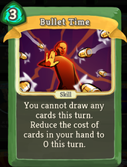

On Card Game Archetypes
In card games, archetypes are recurring decks within a game’s meta that are defined with a certain strategy in mind. At a very broad glance, most card games regardless of their type TCG, CCG, Deck-Building, etc. can separate their deck strategies into aggro, tempo, and control.
Aggro decks are designed around running cheap cards on the lower end of the power curve with the idea of trying to quickly and proactively win as fast as possible.
Control decks are on the other side of the spectrum and utilize a reactive playstyle. The goal of most control decks is to deal with each of the opponent’s threats bringing them to the endgame by exhausting their resources. Control generally wants to be able to control the board state either through clearing threats or setting up defenses to stall until late game.
Tempo decks are ones that focus on the entire power curve and aim to have strong plays on every turn. They don’t plan to rush you down like aggro while still pulling out more threats than the control archetypes.
These meta archetypes tend to form a rock, paper, scissors pattern with aggro beating control, control beating tempo, and tempo beating aggro. However, there are also combo decks that exist outside of this setup and shakeup this simple structure.
Combo decks are ones that are designed purely around trying to execute a single massive turn, usually a One Turn Kill (OTK). They often involve many cards and/or a long setup as the prerequisite for winning the game. Because of this some combo decks tend to be hybrids of one of the other three major meta types, usually control, so they can last long enough to finish the match.
What is An Archetype?
While the base archetypes are fairly well-defined and consistent across card game genres, each game in particular will implement the basic archetypes in their own unique ways, forming sub-archetypes
A sub-archetype is a specific deck composition built around a subset of cards that implements one of the meta archetypes. An example of this would be Deadman’s Hand Warrior or Freeze Mage in Hearthstone or a Storm Deck in Magic the Gathering.
The specific subset of cards used by a sub-archetype generally work together to form a powerful and consistent win-condition, meaning that when you play as or against a Freeze Mage deck from Hearthstone, in most cases 90% of the cards in that deck are predefined by the current meta and all players playing Freeze Mage are using very similar deck lists. This is a positive for both the player playing as and against the deck as both have ideas about how to play that deck already. This also makes slight variations on the deck archetype interesting as well since you can play off those expectations.
One of the defining characteristics of a good card game for both Player vs Player (PVP) and Player vs Environment (PVE) is being able to easily recognize meta archetypes and being able to come up with your own sub-archetypes. If a player can’t see either of these things, they will feel as if they can’t fight back versus the opponent or that their winning/losing of a match feels predefined or random. So it's imperative to make the meta archetypes easily readable. The reading of sub-archetypes, while not an absolute necessity in PVP games as generally players will lookup meta decks, is necessary in PVE games where the need for players to use a guide to play the game makes the experience feel worse.
Slay the Spire
Another technique we tried to use inside Mari’s dungeon was working on our environmental storytelling. While there are quite a few definitions of what this means, to us if this area is supposed to be a theme park then the different key areas for scenes and boss encounters are our rides. However, to keep the park interesting we need to have the connecting areas between these rides be visually interesting and distinct as landmarks as well.
For example, take The Silent’s Bullet Time card. This is a high cost skill which prevents card draw but allows you to cast the rest of the cards in your hand. Immediately a player who sees this may want to build a deck around it which may take the form of filling your deck with high cost, powerful cards that you can’t cast all in one turn usually. The player then may want to balance this out through cantrips (cards that replace themselves) or other tutoring (cards that search for other cards) mechanisms. But if the player puts in too many of these their effects can become useless after you cast this card.
The player is immediately presented with interesting deck composition decisions and the ability to express their desired archetype through a single card. Whether or not this card is balanced or top tier in the current meta is irrelevant as long as it presents these thoughts to the player.
Rainfall Archetypes
In Rainfall, Jin will always have an Archetype equipped. These archetypes are acquired over the course of the game as the player beats story events and can be swapped out when out of combat. They grant different variations on the Chuuni Meter among other benefits. They are meant to encourage certain deck archetypes similar to cards like Slay The Spire’s Bullet Time that push certain deck sub-archetypes. Every card belongs to an archetype, so when selecting an archetype you build a deck for it using a specific set of cards.
An example of this is Jin’s first Archetype: Delayed Gratification. Delayed Gratification comes with a passive trait that every card played grants 1 stack of Delayed Gratification. When an Attack is played its damage is doubled for every 5 stacks of Delayed Gratification. There is no upper limit on these stacks.
Right away this passive effect has a couple of ways it could go: one where you try to abuse the stacks as often as possible creating an aggro version of the deck and one where you play a lack of attack cards so you can build up your stacks leading to a massive Delayed Gratification attack. While these two are fairly basic they exist on opposite sides of the spectrum with one being aggro/tempo focused and the other more control/combo like.
In addition to selecting an archetype, you can also associate 3 Artifacts with a deck. An artifact is a passive ability that alters combat and are unlocked through side quests, bosses, etc. These artifacts are usually deck agnostic though some may be restricted to a single archetype. Through this, the player is able to easily construct a greater range of sub-archetypes.
An example of an Artifact could be: Yumeko’s Failed Cooking - 0 Cost Attack Cards can’t trigger Delayed Gratification. This very simple artifact if equipped would allow the player to incorporate more 0 Cost Attack Cards in their deck instead of them being dead draws inside the Control Variant of the deck. This could then allow you to add the following card to your deck granting you more defensive tooling so you can survive to your combo and have a bit more fire power in the meantime:
The Best Defense... - 1 Cost - Skill - Gain 4 Block and Add an Ethereal Dagger to your hand. Ethereal Dagger - 0 Cost - Attack - Deal 4 damage. Ethereal. Exhaust.
This card normally may be an odd inclusion, since doubling the damage on a 4 damage attack would not be a big payoff. So you’d either not cast the attack spell, making the base card not cost efficient, or cast anyways and reset the combo. The artifact removes this restriction and opens up the ability to include different cards in your base archetype.